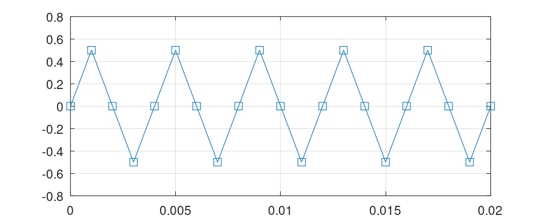
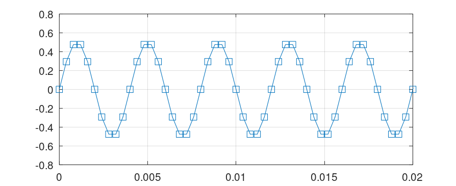
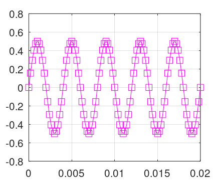
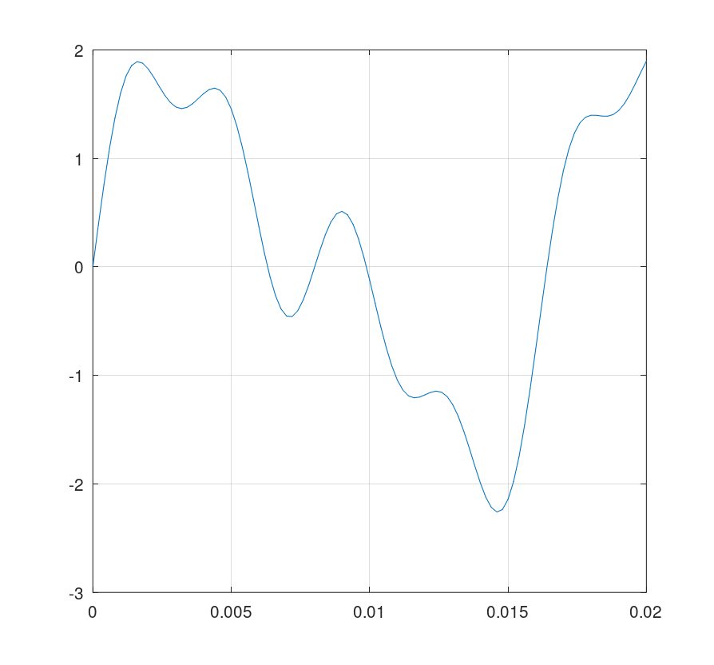
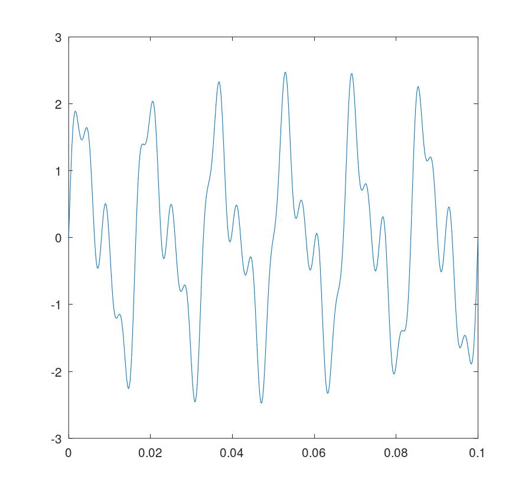
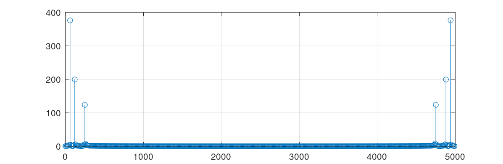
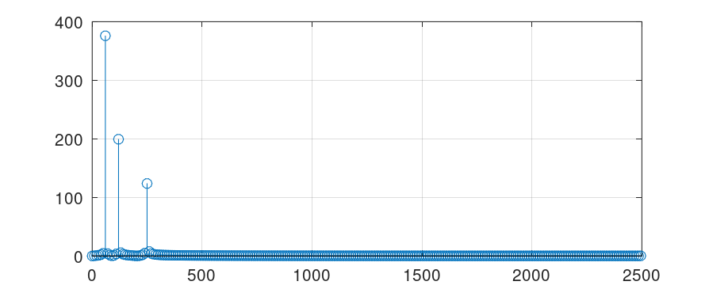
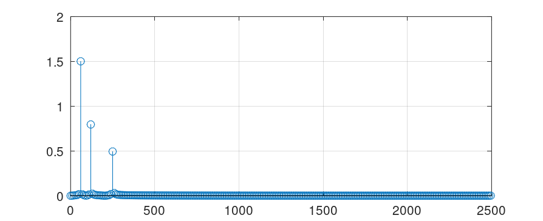
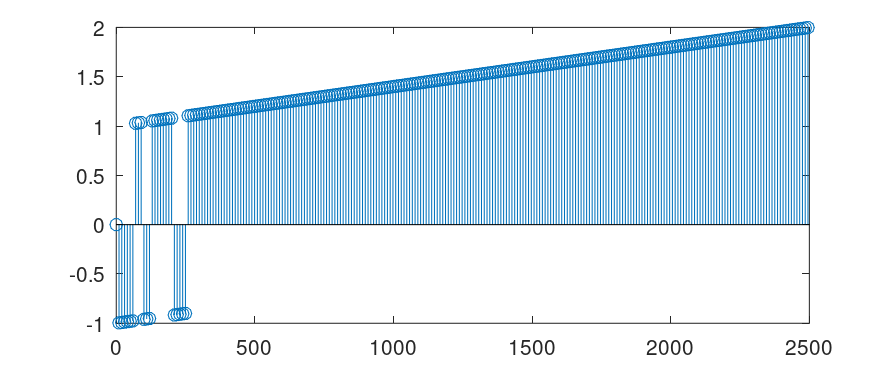
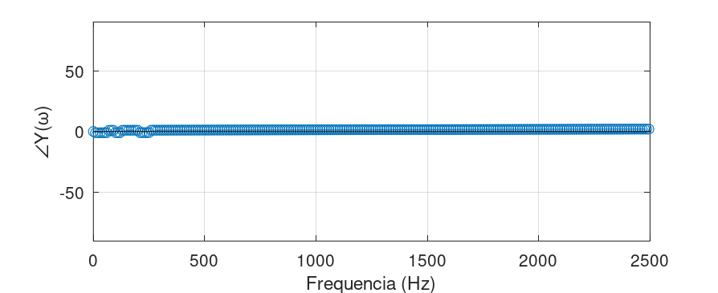

Aula de 11/11/2026 Assunto: Aprendendo a usar algoritmo fft para obter espectro de um sinal
Sugere-se fortemente, se basear na página:
O material abaixo está associado com a resolução da TDE2. Acompanhe pela página TDE2, o que está sendo realizado aqui.
>> diary "11nov2026.txt" % cria arquivo texto com cópia (dump) dos comandos realizados>> f1=60;>> f2=120;>> f3=250;>> fs=1000; % freq. de amostragem inicialmente usada>> T=1/fsT = 1.0000e-03>> t=0:T:100*T;>> size(t)ans = 1 101>> y1=1.5*sin(2*pi*f1*t);>> y2=0.8*sin(2*pi*f2*t);>> y3=0.5*sin(2*pi*f3*t);Poderiámos já fazer y=y1+y2+y3 e plotar a forma de onda
>> plot(t,y3,'s-')>> xlim([0 0.02])>> grid>> print("fig1.png", "-dpng", "-r150"); % salva figura com resolução melhor>> %  % comando para edição markdownE temos a figura abaixo:

Notamos que amostramos poucos e apenas certos pontos da senóide da onda de 250 Hz, justamente os pontos nos quais a senóide passa por zero ou nos seus valores máximos e mínimos. O resultado (para um computador ou uP que vai trabalhar com estes dados, é que este sinal é onda triangular, não uma onda senoidal.
Temos que aumentar a quantidade de pontos amostrados na onda de 250 Hz, para melhorar esta impressão.
>> fs=10*250; % nova freq. de amostragem, 10 pontos por ciclo>> fsfs = 2500>> T=1/fs % recalculando o novo incremento de tempo entre amostrasT = 4.0000e-04>> t=0:T:100*T; % recalculando vetor tempo>> y3=0.5*sin(2*pi*f3*t); % recalculando vetor y3>> figure; plot(t,y3,'s-')>> xlim([0 0.02])>> grid>> print("fig2.png", "-dpng", "-r150"); % salva figura com resolução melhorFigura resultante:

Notamos que esta quantidade de amostras permite distinguir visualmente entre onda triangular e senoidal. Mas poderíamos aumentar ainda mais a freq. de amostragem usada, ou quantidade de pontos por amostra.
>> % Vamos subir para 20 pts/ciclo em 250Hz>> fs=20*250 % freq. de amostragemfs = 5000>> T=1/fsT = 2.0000e-04>> t=0:T:100*T; % continuamos amostrando 100 amostras>> size(t)ans = 1 101>> y3=0.5*sin(2*pi*f3*t);>> figure; plot(t,y3,'ms-')>> grid>> print("fig3.png", "-dpng", "-r150"); % salva figura com resolução melhorA onda de 250 Hz, amostrada numa frequênica 20 vezes maior (20 pontos por ciclo), rende a figura abaixo:

Sintetizando as outras ondas e compondo o sinal final:
>> y1=1.5*sin(2*pi*f1*t);>> y2=0.8*sin(2*pi*f2*t);>> y=y1+y2+y3; % compondo o sinal>> figure; plot(t,y)>> grid>> print("y_100pts.png", "-dpng", "-r150");Obtemos o seguinte resultado:

A principio, este sinal parece incorrento. Não conseguimos detectar um "padrão", ou perceber que o mesmo é periódico.
Revisando os comandos, percebemos que não fizemos nada de errado. O problema está na quantidade de amostras; 100 amostras é insuficiente para que se possa perceber alguma periodicidade do sinal
Necessitamos incrementar o número de amostras. Decidimos por subir de 100 para 500 amostras.
>> % 100 amostras é pouco>> t=0:T:500*T;>> y1=1.5*sin(2*pi*60*t);>> y2=0.8*sin(2*pi*120*t);>> y3=0.5*sin(2*pi*250*t);>> y=y1+y2+y3; % compondo o sinal>> figure; plot(t,y)>> print("y_500pts.png", "-dpng", "-r150"); % salva figura com resolução melhorO sinal

A ideia agora (e era o objetivo inicial) é usar o algoritmo fft sobre o sinal
>> % rodando a fft>> Y=fft(y);>> size(y) % note y=y(t), no domínio tempoans = 1 501>> size(Y) % note: Y=Y(w)=F(Ω)=F{y(t)}, estamos no domínio frequenciaans = 1 501>> Y(1:5)' % mostra primeiros 5 valores (note números complexos)ans = 0.0000 - 0i 0.0022 + 0.3432i 0.0092 + 0.7372i 0.0239 + 1.2688i 0.0544 + 2.1693i
>> Ymag=abs(Y); % obtendo o módulo/magnitudo do vetor>> N=length(Ymag) % confirmando qtdade de pontos = qtdade do sinal de entradaN = 501Note: o algoritmo fft não devolve o eixo X associado com frequência. É você, o usuário do algoritmo que deve saber como sintetizar este vetor.
xxxxxxxxxx>> f=(0:N-1)*fs/N; % montando o vetor das frequênicas (os "bins")>> [f(1:5)' Ymag(1:5)'] % monstrando primeiros 5 valores de freq x |Y(w)|ans = 0 0.0000 9.9800 0.3432 19.9601 0.7373 29.9401 1.2690 39.9202 2.1700Cada amostra (novo valor, cada componente) do vetor
onde:
Então podemos calcular o que chamamos de "Resolução frequencial" (eq. (1)), neste caso:
xxxxxxxxxx>> (5000)/501ans = 9.9800Note que não resultou um valor inteiro. Se tivéssemos tomado o cuidado de limitar o vetor
Mas, vamos continuar assim mesmo...
xxxxxxxxxx>> figure; stem(f,Ymag)>> grid>> print("fft_inicial.png", "-dpng", "-r150");Confirmando a resolução frequencial:
xxxxxxxxxx>> f(1)ans = 0>> f(2)ans = 9.9800O gráfico inicial ficou:

E então percebemos que o algoritmo fft calcula a transformada de Fourier bilateralmente no espectro (calcula a transformada bilateral de Fourier).
Note que o gráfico é simétrico em relação a sua frequência central, que é justamente a frequência de Nyquist.
A maior frequência calculada corresponde à frequência de Nyquist, que é:
Limitando o gráfico para a região unilateral, lado esquerdo:
xxxxxxxxxx>> xlim([0 5000/2])>> print("fft_unilateral.png", "-dpng", "-r150"); % salva figura com resolução melhorTransformamos o gráfico original de

Agora vamos analizar melhor este gráfico e entender o que fez o algoritmo fft.
Note que as amplitudes calculadas não correspondem às esperadas, falta considerar que o resultado calculado pelo algoritmo fft acaba ficando proporcional ao número de amostradas usadas. Então temos que "corrigir" isto:
xxxxxxxxxx>> Ymag=Ymag/N; % re-escalonando amplitudes>> Ymag(2:end-1)=2*Ymag(2:end-1); % considerando espectro refletivos, menos eixo central f = 0 Hz>> % descobrindo valor do índice que melhor equivale a fs/2 = 2500 Hz>> N/2ans = 250.50>> f(250)ans = 2485.0>> f(251)ans = 2495.0>> f(252)ans = 2505.0>> figure; stem(f(1:251),Ymag(1:251))>> grid>> print("espectro_magnitude.png", "-dpng", "-r150");Finalmente segue a figura desejada, o Espectro de Magnitudes (com as amplitudes corretas):

Descobrindo agora os índices relacionados as principais frequencias. A idéia aqui é descobrir a defasageem angular de cada uma delas:
xxxxxxxxxx>> 250/9.98 % 9,98 Hz = resolução espectral neste casoans = 25.050>> f(25)ans = 239.52>> f(26)ans = 249.50>> f(27)ans = 259.48>> 120/9.98ans = 12.024>> f(12)ans = 109.78>> f(13)ans = 119.76>> f(14)ans = 129.74>> 60/9.98ans = 6.0120>> f(6)ans = 49.900>> f(7)ans = 59.880>> f(8)ans = 69.860>> % separando os índices que interessam num outro vetor, o `aux`>> aux=[7 8 13 14 26 27];>> [f(aux)' Ymag(aux)'] % gera uma espécie de tabela Freq x Magnitudesans = 5.9880e+01 1.5008e+00 6.9860e+01 1.6191e-02 1.1976e+02 7.9567e-01 1.2974e+02 2.2541e-02 2.4950e+02 4.9390e-01 2.5948e+02 3.0056e-02
>> format shortg % formato mais curto para mostrar números float>> [f(aux)' Ymag(aux)']ans = 59.88 1.5008 69.86 0.016191 119.76 0.79567 129.74 0.022541 249.5 0.4939 259.48 0.030056
>> Yfase=angle(Y); % calculando os ângulos>> Yfase=rad2deg(Yfase); % tranformando de rad para graus>> Yfase=Yfase/90; % compensar o espectro bilateral>> figure; stem(f(1:251),Yfase(1:251))>> print("espectro_fase.png", "-dpng", "-r150"); % salva figura com resolução melhorTemos a figura das defasagens angulares (que não parece tão "simpático"):

Modificando o gráfico anterior, considerando que é comum esperar defasagens de um sinal na faixa de
x
>> ylim([-90 90]) % o range esperado (ou -180 até +180 graus)>> grid>> xlabel('Frequencia (Hz)')>> ylabel('\angle{Y(\omega)}')>> print("fft_fase2.png", "-dpng", "-r150");E então temos o esperado gráfico do Espectro de Defasagens:

Ficando mais claro que praticamente não há defasagens nas frequências calculadas. Valores diferentes de zero e muito próximos de zero de devem à erros de truncagem no cálculo da FFT.
Montando agora uma espécie de tabela final relacionando Frequênica
xxxxxxxxxx>> [f(aux)' Ymag(aux)' Yfase(aux)']ans = 59.88 1.5008 -0.97605 69.86 0.016191 1.0279 119.76 0.79567 -0.9521 129.74 0.022541 1.0519 249.5 0.4939 -0.9002 259.48 0.030056 1.1038Fim da aula.
Salvando esta seção de trabalho e fechando o arquivo diary.
xxxxxxxxxx>> save aula_11nov2026.mat>> diary off
Fernando Passold, em 11/11/2026